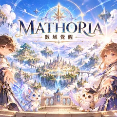
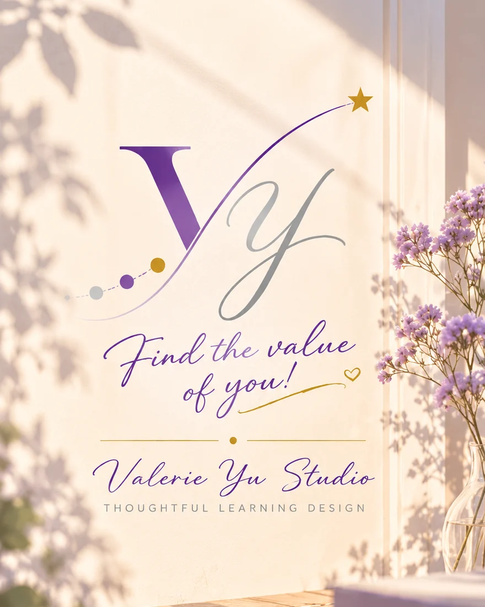

VALERIE YU STUDIO · LEARNING DESIGN
Find the value of you!
清晰的設計，成就更好的學習。
我是 Valerie 老師，教國中與高中數學，也陪學生走升學這條路。這裡收著我做的互動教材，也記下它們在教室裡真正被使用的樣子。
SCROLL
01 / 04
02 從卡點出發
學生卡在哪一步？
- 九年級比例線段看不出關係
- 十一年級弧度想像不出來
- 十一年級對數好抽象，背了就忘
那就把那一步，做成可以動手試的網頁。
02 / 04
03 作品收集
14件互動教材與工具
每個單元，都值得被好好設計
互動數位課本、PBL 專題、闖關遊戲、升學輔導與教師工具，依年段整理，打開就能用。
最新上線 · 十一年級升學輔導升學導航先認識自己，再找到方向：興趣探索、十八學群、2,240 個校系分則與落點分析。
→

最新上線 · 九年級遊戲化學習MATHORIA 數域魔法學院依康軒九上、九下單元打造的數學冒險地圖：闖關、角色進化、挑戰魔王。
→
進入作品收集 →


03 / 04
04 課堂風景
教材走進教室之後
最新 · 九年級測量遠征成果發表
學生拿著自己量出來的數據上台：用影子量大樓、用視角估算到台北 101 的距離，再回頭分析誤差。每一堂課的照片與筆記，都收在這裡。
看課堂風景 →04 / 04

CHOOSE YOUR DOOR
Where to next?
想看我做了哪些教材，還是想看它們在教室裡的樣子？